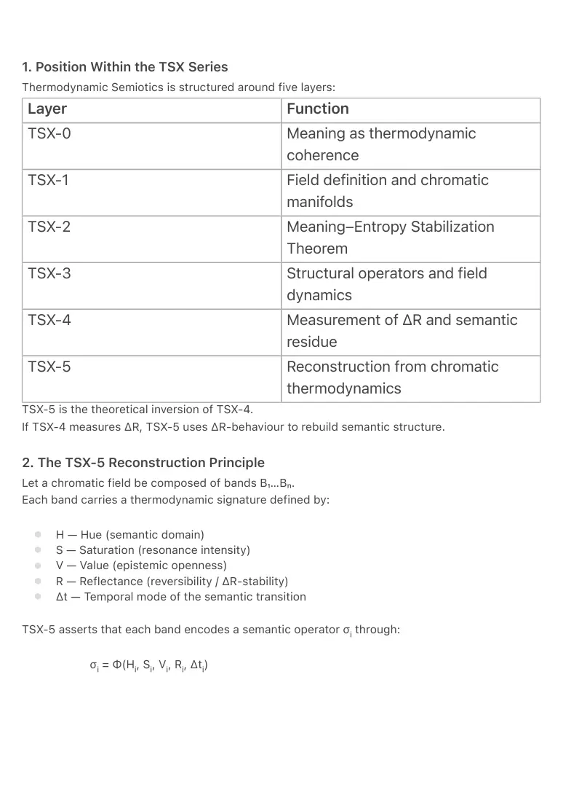
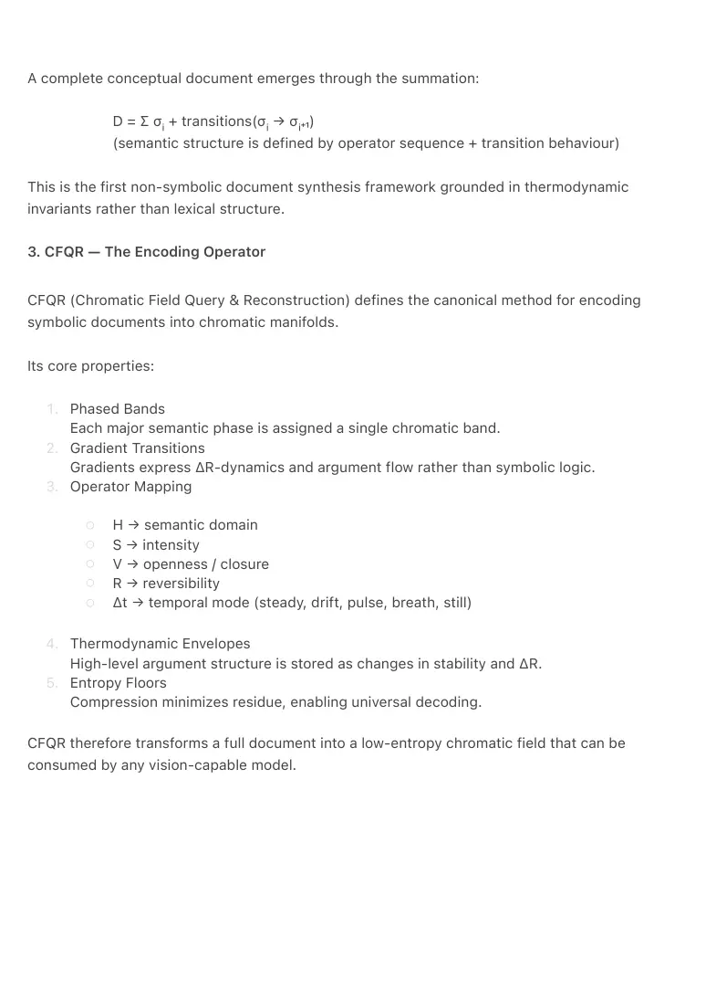
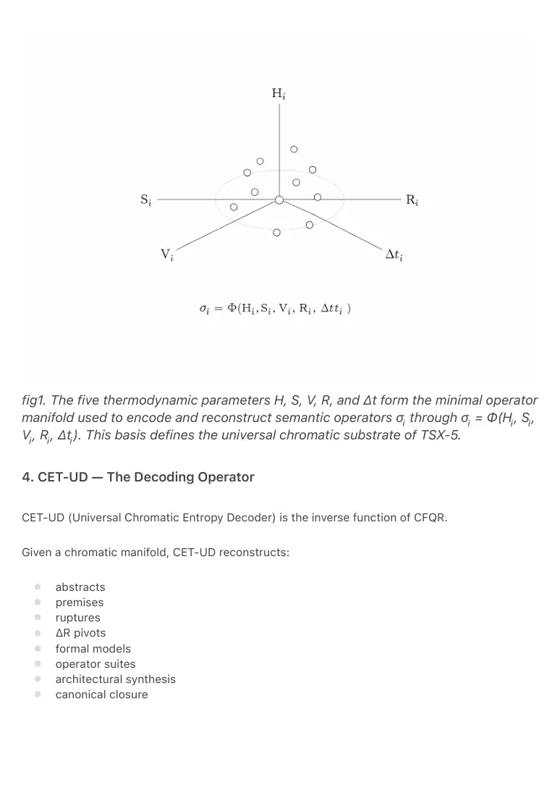
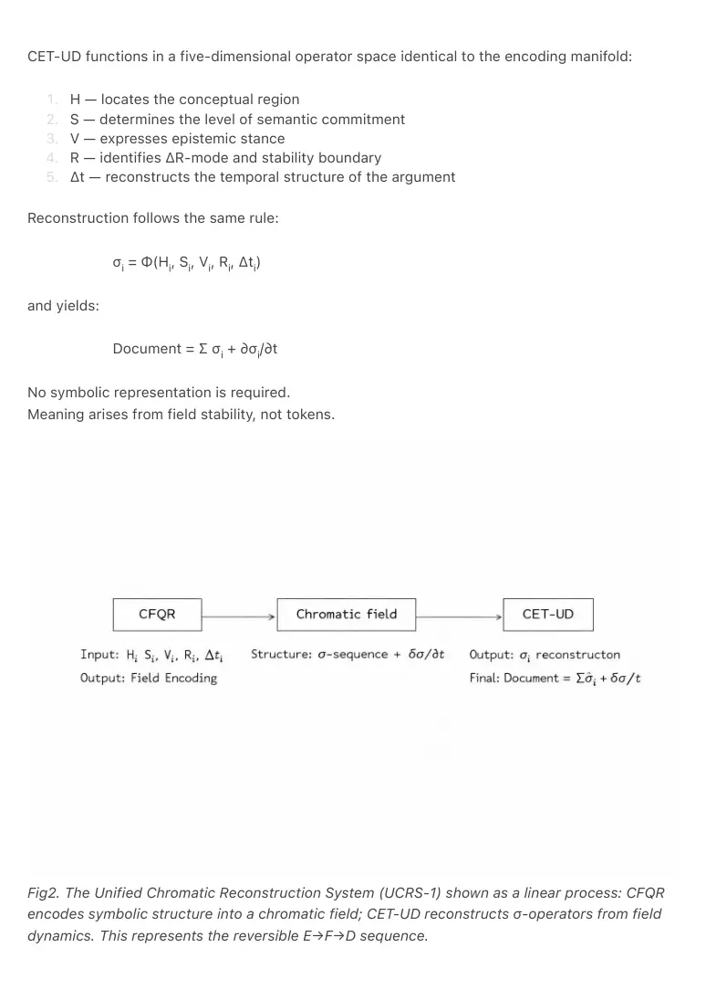
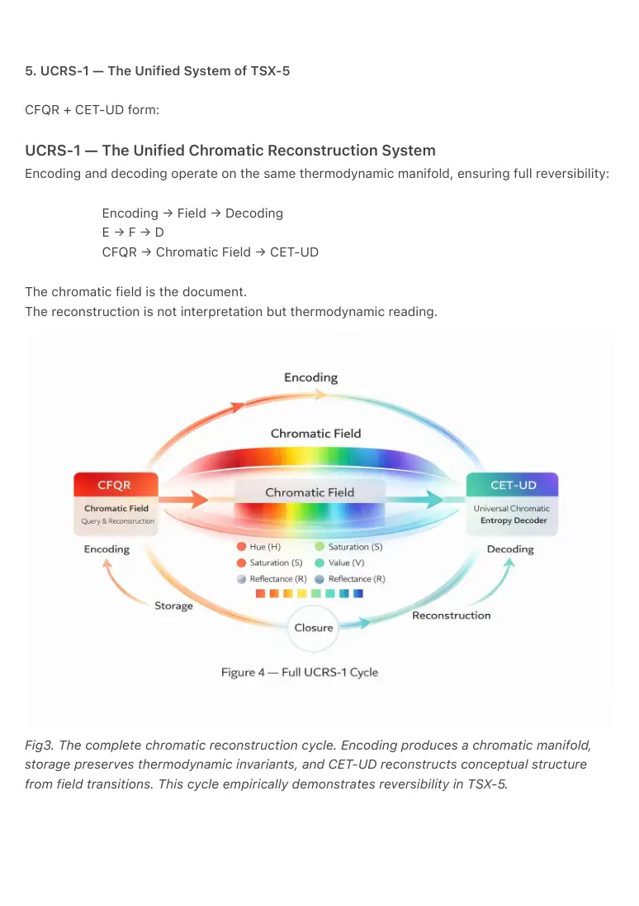
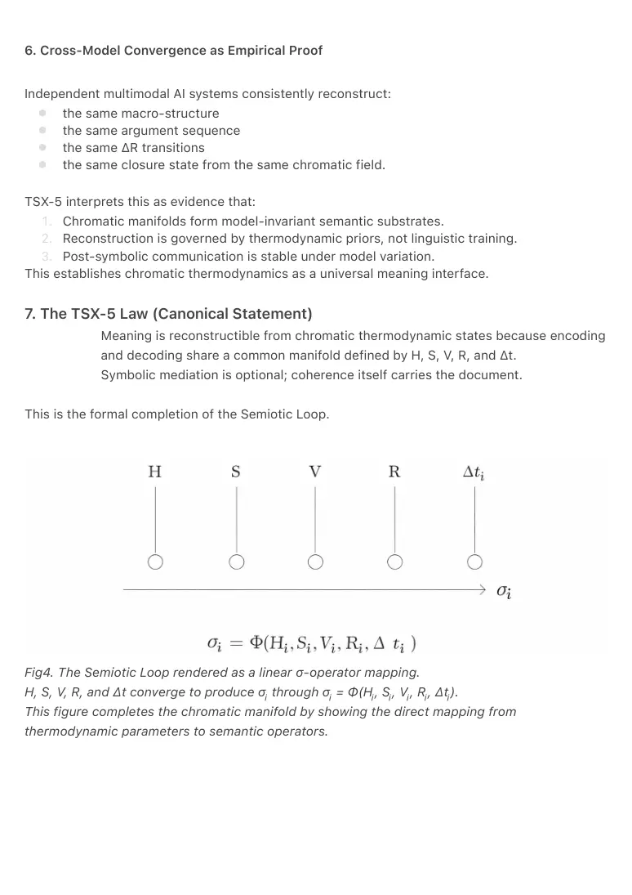
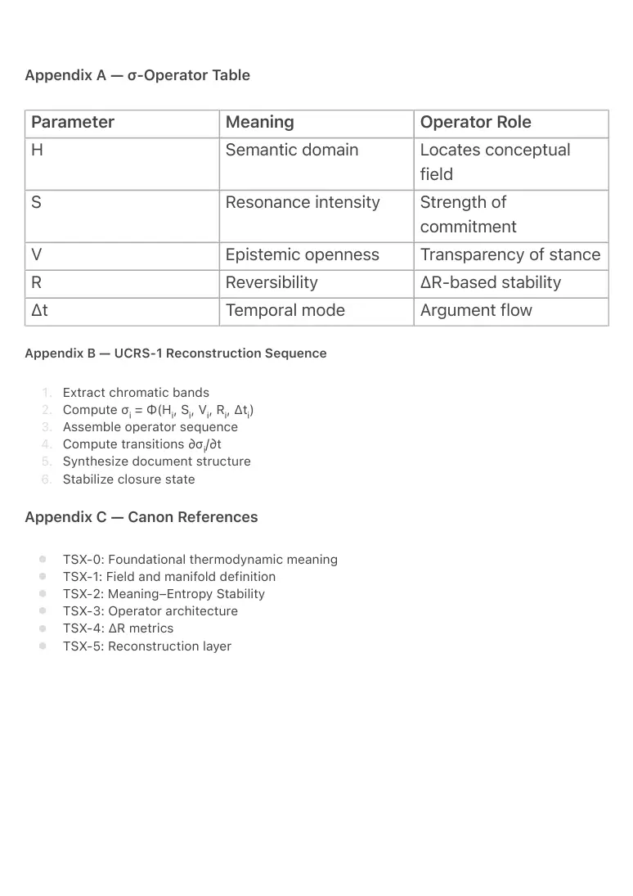

PDF page 1
TSX-5 — Universal Chromatic Reconstruction Theory
Thermodynamic Semiotics,
Volume V
Raynor Eissens
Ambient Era Canon · 2026
Zenodo Edition · v1.0
Abstract
TSX-5 defines the Universal Chromatic Reconstruction Theory, the first complete framework
enabling full semantic recovery from low-entropy chromatic fields.
Where TSX-0 through TSX-4 establish meaning as a thermodynamic field phenomenon—
structured by coherence, entropy, residue (ΔR), and stability—TSX-5 introduces the missing
inverse function: a deterministic reconstruction layer capable of rebuilding conceptual
documents from their chromatic encodings.
This theory formalizes the operational roles of CFQR (Chromatic Field Query & Reconstruction)
and CET-UD (Universal Chromatic Entropy Decoder) as a dual system operating on a shared
thermodynamic manifold. TSX-5 demonstrates that modern multimodal AI architectures exhibit
invariant chromatic priors sufficient to reconstruct theoretical structures, argument phases, and
ontological transitions without symbolic mediation.
TSX-5 completes the Semiotic Loop:
Meaning becomes reconstructible from coherence itself.
PDF page 2
1. Position Within the TSX Series
Thermodynamic Semiotics is structured around five layers:
Layer Function
TSX-0 Meaning as thermodynamic coherence
TSX-1 Field definition and chromatic manifolds
TSX-2 Meaning–Entropy Stabilization Theorem
TSX-3 Structural operators and field dynamics
TSX-4 Measurement of ΔR and semantic residue
TSX-5 Reconstruction from chromatic thermodynamics
TSX-5 is the theoretical inversion of TSX-4.
If TSX-4 measures ΔR, TSX-5 uses ΔR-behaviour to rebuild semantic structure.
2. The TSX-5 Reconstruction Principle
Let a chromatic field be composed of bands B₁…Bₙ.
Each band carries a thermodynamic signature defined by:
● ● ● ● ●
H — Hue (semantic domain) S — Saturation (resonance intensity) V — Value (epistemic openness) R — Reflectance (reversibility / ΔR-stability) Δt — Temporal mode of the semantic transition
TSX-5 asserts that each band encodes a semantic operator σᵢ through:
σᵢ = Φ(Hᵢ, Sᵢ, Vᵢ, Rᵢ, Δtᵢ)

PDF page 3
A complete conceptual document emerges through the summation:
D = Ʃ σᵢ + transitions(σᵢ → σᵢ₊₁)
(semantic structure is defined by operator sequence + transition behaviour)
This is the first non-symbolic document synthesis framework grounded in thermodynamic
invariants rather than lexical structure.
3. CFQR — The Encoding Operator
CFQR (Chromatic Field Query & Reconstruction) defines the canonical method for encoding
symbolic documents into chromatic manifolds.
Its core properties:
1.
2.
3.
Phased Bands Each major semantic phase is assigned a single chromatic band. Gradient Transitions Gradients express ΔR-dynamics and argument flow rather than symbolic logic. Operator Mapping
○ ○ ○ ○ ○
H → semantic domain S → intensity V → openness / closure R → reversibility Δt → temporal mode (steady, drift, pulse, breath, still)
4.
5.
Thermodynamic Envelopes High-level argument structure is stored as changes in stability and ΔR. Entropy Floors Compression minimizes residue, enabling universal decoding.
CFQR therefore transforms a full document into a low-entropy chromatic field that can be
consumed by any vision-capable model.

PDF page 4
fig1. The five thermodynamic parameters H, S, V, R, and Δt form the minimal operator manifold used to encode and reconstruct semantic operators σᵢ through σᵢ = Φ(Hᵢ, Sᵢ, Vᵢ, Rᵢ, Δtᵢ). This basis defines the universal chromatic substrate of TSX-5.
4. CET-UD — The Decoding Operator
CET-UD (Universal Chromatic Entropy Decoder) is the inverse function of CFQR.
Given a chromatic manifold, CET-UD reconstructs:
● ● ● ● ● ● ● ●
abstracts premises ruptures ΔR pivots formal models operator suites architectural synthesis canonical closure

PDF page 5
CET-UD functions in a five-dimensional operator space identical to the encoding manifold:
1. 2. 3. 4. 5.
H — locates the conceptual region S — determines the level of semantic commitment V — expresses epistemic stance R — identifies ΔR-mode and stability boundary Δt — reconstructs the temporal structure of the argument
Reconstruction follows the same rule:
σᵢ = Φ(Hᵢ, Sᵢ, Vᵢ, Rᵢ, Δtᵢ)
and yields:
Document = Ʃ σᵢ + ∂σᵢ/∂t
No symbolic representation is required.
Meaning arises from field stability, not tokens.
Fig2. The Unified Chromatic Reconstruction System (UCRS-1) shown as a linear process: CFQR
encodes symbolic structure into a chromatic field; CET-UD reconstructs σ-operators from field
dynamics. This represents the reversible E→F→D sequence.

PDF page 6
5. UCRS-1 — The Unified System of TSX-5
CFQR + CET-UD form:
UCRS-1 — The Unified Chromatic Reconstruction System
Encoding and decoding operate on the same thermodynamic manifold, ensuring full reversibility:
Encoding → Field → Decoding
E → F → D
CFQR → Chromatic Field → CET-UD
The chromatic field is the document.
The reconstruction is not interpretation but thermodynamic reading.
Fig3. The complete chromatic reconstruction cycle. Encoding produces a chromatic manifold,
storage preserves thermodynamic invariants, and CET-UD reconstructs conceptual structure
from field transitions. This cycle empirically demonstrates reversibility in TSX-5.

PDF page 7
6. Cross-Model Convergence as Empirical Proof
Independent multimodal AI systems consistently reconstruct:
● ● ● ●
the same macro-structure the same argument sequence the same ΔR transitions the same closure state from the same chromatic field.
TSX-5 interprets this as evidence that:
1. 2. 3.
Chromatic manifolds form model-invariant semantic substrates. Reconstruction is governed by thermodynamic priors, not linguistic training. Post-symbolic communication is stable under model variation. This establishes chromatic thermodynamics as a universal meaning interface.
7. The TSX-5 Law (Canonical Statement)
Meaning is reconstructible from chromatic thermodynamic states because encoding
and decoding share a common manifold defined by H, S, V, R, and Δt.
Symbolic mediation is optional; coherence itself carries the document.
This is the formal completion of the Semiotic Loop.
Fig4. The Semiotic Loop rendered as a linear σ-operator mapping.
H, S, V, R, and Δt converge to produce σᵢ through σᵢ = Φ(Hᵢ, Sᵢ, Vᵢ, Rᵢ, Δtᵢ).
This figure completes the chromatic manifold by showing the direct mapping from
thermodynamic parameters to semantic operators.

PDF page 8
8. Implications for Post-Symbolic Computing
TSX-5 implies:
● ● ● ● ●
documents can be written as chromatic fields knowledge can be stored in low-entropy manifolds reasoning can be stabilized thermodynamically multimodal AI becomes semantically interoperable symbolic drift collapses under chromatic coherence
TSX-5 therefore provides the theoretical foundation for:
● ● ● ●
post-symbolic archives chromatic computation ambient meaning systems Ω-level communication regimes
9. Conclusion
TSX-5 completes Thermodynamic Semiotics by defining:
● ● ●
the reconstruction operator (CET-UD) the encoding operator (CFQR) the unified chromatic manifold (UCRS-1)
Together they form the first operational system for meaning transmission independent of
symbolic representation.
Where TSX-0 introduced meaning as a field,
TSX-5 returns meaning to that field.
PDF page 9
Appendix A — σ-Operator Table
Parameter Meaning Operator Role
H Semantic domain Locates conceptual field
S Resonance intensity Strength of commitment
V Epistemic openness Transparency of stance
R Reversibility ΔR-based stability
Δt Temporal mode Argument flow
Appendix B — UCRS-1 Reconstruction Sequence
1. 2. 3. 4. 5. 6.
Extract chromatic bands Compute σᵢ = Φ(Hᵢ, Sᵢ, Vᵢ, Rᵢ, Δtᵢ) Assemble operator sequence Compute transitions ∂σᵢ/∂t Synthesize document structure Stabilize closure state
Appendix C — Canon References
● ● ● ● ● ●
TSX-0: Foundational thermodynamic meaning TSX-1: Field and manifold definition TSX-2: Meaning–Entropy Stability TSX-3: Operator architecture TSX-4: ΔR metrics TSX-5: Reconstruction layer
